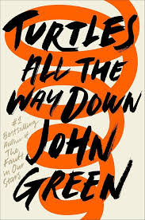
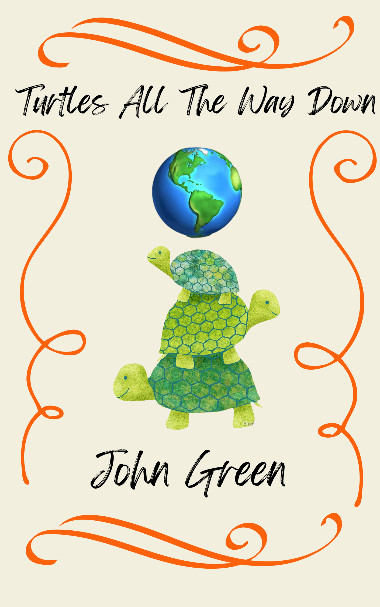

The Turtle All The Way Down is about a girl named Aza Holmes who suffers from OCD and she learned through hardships in the story that her disability doesn't "define" who she is.
Aza Holmes remains true to her identity throughout the story by going through life-changing events allowing self-reflection and growth.


A text-to-world connection that really correlates with the story is in 2020 during the pandemic causing stress and the inability to interact with others afterwards. Futhermore, the pandemic helped us realize that interactions are necessary when keeping your mental health in check. Otherwise, you won't be able to take care of others nor youself.